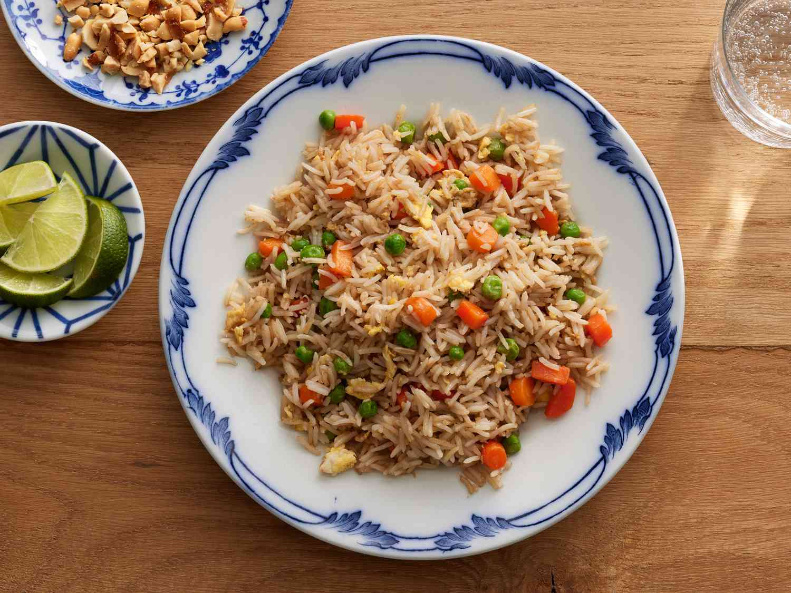

RICE

Introduction
Rice is a cereal grain, and in its domesticated form is the staple food for over half of the world's human population, particularly in Asia and Africa, due to the vast amount of soil that is able to grow rice. Rice is the seed of the grass species Oryza sativa (Asian rice) or, much less commonly, O. glaberrima (African rice). Asian rice was domesticated in China some 13,500 to 8,200 years ago, while African rice was domesticated in Africa some 3,000 years ago. Rice has become commonplace in many cultures worldwide; in 2021, 787 million tons were produced, placing it fourth after sugarcane, maize, and wheat. Only some 8% of rice is traded internationally. China, India, and Indonesia are the largest consumers of rice. A substantial amount of the rice produced in developing nations is lost after harvest through factors such as poor transport and storage. Rice yields can be reduced by pests including insects, rodents, and birds, as well as by weeds, and by diseases such as rice blast. Traditional polycultures such as rice-duck farming, and modern integrated pest management seek to control damage from pests in a sustainable way.
Many varieties of rice have been bred to improve crop quality and productivity. Biotechnology has created Green Revolution rice able to produce high yields when supplied with nitrogen fertilizer and managed intensively. Other products are rice able to express human proteins for medicinal use; flood-tolerant or deepwater rice; and drought-tolerant and salt-tolerant varieties. Rice is used as a model organism in biology.
Dry rice grain is milled to remove the outer layers; depending on how much is removed, products range from brown rice to rice with germ and white rice. Some is parboiled to make it easy to cook. Rice contains no gluten; it provides protein but not all the essential amino acids needed for good health. Rice of different types is eaten around the world. Long-grain rice tends to stay intact on cooking; medium-grain rice is stickier, and is used for sweet dishes, and in Italy for risotto; and sticky short-grain rice is used in Japanese sushi as it keeps its shape when cooked. White rice when cooked contains 29% carbohydrate and 2% protein, with some manganese. Golden rice is a variety produced by genetic engineering to contain vitamin A.
Production of rice is estimated to have caused over 1% of global greenhouse gas emissions in 2022. Rice yields are predicted to fall by some 20% with each 1°C rise in global mean temperature. In human culture, rice plays a role in certain religions and traditions, such as in weddings.
Nutrition
is a staple food for a large part of the world's population, and it provides a range of essential nutrients. Here's a breakdown of the nutritional value of rice:
- Macronutrients:
- Carbohydrates: Rice is primarily composed of carbohydrates. One cup (186 grams) of cooked white rice contains approximately 44 grams of carbohydrates.
- Protein: Rice contains a small amount of protein, with one cup of cooked white rice providing around 4 grams of protein.
- Fat: Rice is naturally low in fat, with one cup of cooked white rice containing only 0.4 grams of fat.
- Vitamins and Minerals:
-
Vitamins: Rice is a good source of several B vitamins, including thiamine (vitamin B1), niacin (vitamin B3), and vitamin B6.
- Iron: Rice contains a small amount of iron, but the iron in rice is not as easily absorbed as the iron found in animal sources.
- Manganese: Rice is a good source of manganese, a mineral that plays a role in bone health and antioxidant defenses.
- Selenium: Rice provides a small amount of selenium, an essential mineral with antioxidant properties.
- Fiber:
-
White rice is relatively low in fiber, with one cup providing only 0.6 grams of fiber.
- Brown rice, on the other hand, is a good source of fiber, providing around 3.5 grams of fiber per cup.
- Antioxidants:
-
Brown rice contains antioxidants like ferulic acid, which may have potential health benefits.
- Colored varieties of rice, such as black rice and red rice, are higher in antioxidants like anthocyanins.
- Glycemic Index:
- White rice has a relatively high glycemic index (GI), meaning it can cause a rapid spike in blood sugar levels after consumption.
- Brown rice has a lower GI compared to white rice, making it a better option for managing blood sugar levels.
It's important to note that while rice is a good source of carbohydrates and provides some essential nutrients, it should be consumed as part of a balanced diet that includes other nutrient-dense foods like vegetables, fruits, lean proteins, and healthy fats.
Additionally, different varieties of rice, such as brown rice, wild rice, and colored rice varieties, may offer additional nutritional benefits compared to regular white rice due to their higher fiber, antioxidant, and nutrient content.

How to grow Rice
Growing rice requires specific conditions and techniques. Here are the steps to grow rice:
- Choose the right variety: Select a rice variety that is suitable for your climate and growing conditions. Common varieties include long-grain, short-grain, and aromatic rice.
- Prepare the field: Rice requires a level field or paddy with good water control. Plow and level the soil, and construct levees or bunds around the field to hold water.
-
Seed preparation: Rice seeds can be either dry-seeded or wet-seeded.
- Dry-seeded: Seeds are sown directly into the prepared field.
- Wet-seeded: Seeds are soaked and pre-germinated before being broadcast or sown into a nursery bed.
- Sowing or transplanting: For dry-seeding, broadcast the seeds evenly over the prepared field. For wet-seeding, either broadcast the pre-germinated seeds into the flooded field or transplant seedlings from the nursery bed.
-
Water management: Rice requires a consistent supply of water during the growing season. After sowing or transplanting, the field should be flooded with 2-4 inches of water and maintained at this level throughout the vegetative and reproductive stages.
-
Fertilization: Rice requires adequate fertilization for optimal growth and yield. Apply a balanced fertilizer containing nitrogen, phosphorus, and potassium. Timing and rates will depend on the specific variety and soil conditions.
-
Weed control: Rice fields are prone to weed infestations, which can compete with the rice plants for nutrients and water. Manual weeding, herbicides, or flooding the field can help control weeds.
-
Pest and disease management: Monitor the rice crop for pests like stem borers, leaf folders, and diseases like blast and bacterial blight. Use appropriate pest management strategies, such as cultural controls, resistant varieties, or approved pesticides if necessary.
Draining and ripening: As the rice grains mature, drain the field to allow the soil to dry and the grains to ripen fully.
-
Harvesting: Rice is typically harvested when the grains are fully mature and the plant turns golden-brown. Harvesting can be done manually or with the use of specialized machinery, depending on the scale of production.
-
Threshing and drying: After harvesting, the rice must be threshed to separate the grains from the stalks and dried to the appropriate moisture level for storage or milling.
Growing rice can be labor-intensive and requires careful water management, fertilization, and pest control. It's essential to follow best practices specific to your region and consult with local agricultural experts or extension services for guidance.
Soil and Nutrition
When it comes to growing rice, soil and nutrient management play a crucial role in achieving a successful crop. Here are some key considerations regarding soil and nutrients for rice cultivation:
-
Soil Type:
-
Rice grows best in heavy clay or clay loam soils that retain moisture well and have good water-holding capacity.
- Sandy soils with poor water retention are generally not suitable for rice cultivation unless they can be flooded effectively.
- Soil pH should ideally be in the range of 6.0 to 7.0 for optimal nutrient availability and rice growth.
- Soil Preparation:
-
Proper land preparation is essential for rice cultivation. This includes plowing, leveling, and constructing levees or bunds to create a flooded field (paddy) for water management.
- Incorporation of organic matter, such as compost or manure, can improve soil structure, fertility, and water-holding capacity.
- Nutrient Requirements:
-
Nitrogen (N): Rice has a high nitrogen requirement, especially during the vegetative and reproductive stages. Nitrogen is crucial for plant growth, tillering, and grain filling.
- Phosphorus (P): Phosphorus is important for root development, tillering, and grain formation. It also enhances disease resistance and improves crop maturity.
- Potassium (K): Potassium plays a role in plant vigor, disease resistance, and grain quality. It helps in drought tolerance and enhances the translocation of photosynthates.
- Nutrient Management:
- Soil testing: Conducting soil tests before planting helps determine the existing nutrient levels and guides the appropriate fertilizer application rates.
- Basal application: Apply a portion of the recommended nitrogen, phosphorus, and potassium as a basal dose before planting or transplanting to provide essential nutrients for early growth.
- Top-dressing: Split the remaining nitrogen into two or three top-dressings during active growth stages, such as tillering, panicle initiation, and heading stages, to meet the crop's high nitrogen demand.
- Integrated nutrient management: Combining organic sources (compost, manure, green manures) with inorganic fertilizers can provide a balanced supply of nutrients and improve soil health.
- Water Management:
- Rice is a semi-aquatic plant and requires a consistent water supply throughout the growing season.
- Proper water management, including maintaining a shallow water level (2-4 inches) in the paddy field, is crucial for efficient nutrient uptake and utilization by the rice crop.
- Excessive drying or flooding can lead to nutrient losses or deficiencies, affecting crop growth and yield.
- Nutrient Deficiency Symptoms:
-
Nitrogen deficiency: Stunted growth, pale green or yellowish leaves, reduced tillering, and poor grain filling.
- Phosphorus deficiency: Stunted growth, dark green or purplish leaves, delayed maturity, and reduced yield.
- Potassium deficiency: Leaf scorching, stunted growth, reduced resistance to pests and diseases, and poor grain quality.
By understanding and managing soil properties, nutrient requirements, and water management strategies, farmers can optimize rice production and achieve higher yields while promoting sustainable soil health.

Fertilizing
Proper fertilization is crucial for achieving a successful and high-yielding rice crop. Here are some guidelines for fertilizing rice:
- Soil Testing: Before applying fertilizers, it's important to conduct a soil test to determine the existing nutrient levels and the specific nutrient requirements for your soil. This will help you determine the appropriate type and amount of fertilizer to apply.
- Nutrient Requirements:
-
Nitrogen (N): Rice has a high nitrogen requirement, especially during the vegetative and reproductive stages. Typical nitrogen application rates range from 60 to 120 pounds per acre, depending on soil fertility, variety, and yield potential.
- Phosphorus (P): Phosphorus is essential for root development, tillering, and grain formation. Recommended rates range from 30 to 60 pounds of P₂O₅ per acre.
Potassium (K): Potassium plays a role in plant vigor, disease resistance, and grain quality. Typical application rates range from 30 to 60 pounds of K₂O per acre.
- Timing of Application:
- Basal Application: Apply a portion of the recommended nitrogen, phosphorus, and potassium as a basal dose before planting or transplanting. This provides essential nutrients for early growth and root development.
- Top-dressing: Split the remaining nitrogen into two or three top-dressings during the active growth stages, such as tillering, panicle initiation, and heading stages. This helps meet the crop's high nitrogen demand during these critical growth phases.
- Flertilizer Sources:
-
Organic Fertilizers: Compost, farmyard manure, and green manures can provide essential nutrients and improve soil health. However, they may not supply sufficient nutrients for optimal rice yields.
- Inorganic Fertilizers: Common inorganic fertilizers used for rice include urea (for nitrogen), diammonium phosphate (for nitrogen and phosphorus), and muriate of potash (for potassium).
- Application Methods:
-
Broadcasting: Fertilizers can be broadcast evenly over the field before planting or top-dressing.
- Banding: Fertilizers can be applied in bands near the plant rows for better efficiency and reduced nutrient losses.
- Foliar Application: Foliar application of liquid fertilizers, especially micronutrients, can be considered during critical growth stages for a quick nutrient boost.
- Water Management: Proper water management is crucial for efficient nutrient uptake and utilization by the rice crop. Maintain a consistent water level in the field and avoid excessive drying or flooding, which can lead to nutrient losses or deficiencies.
- Integrated Nutrient Management: For sustainable rice production, it's recommended to adopt an integrated nutrient management approach, combining organic and inorganic fertilizers, along with other practices like crop rotation and incorporation of crop residues.
It's important to follow local recommendations and guidelines for fertilizer application rates, timing, and methods, as these can vary based on your specific soil conditions, climate, and rice variety. Proper fertilization, combined with good agronomic practices, can help ensure optimal rice growth, yield, and grain quality.